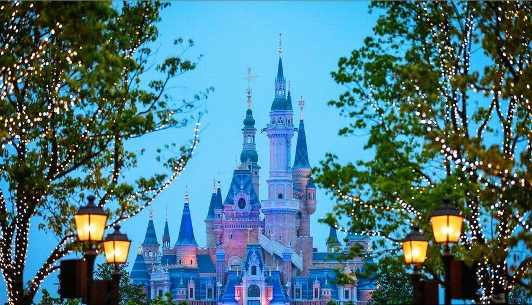
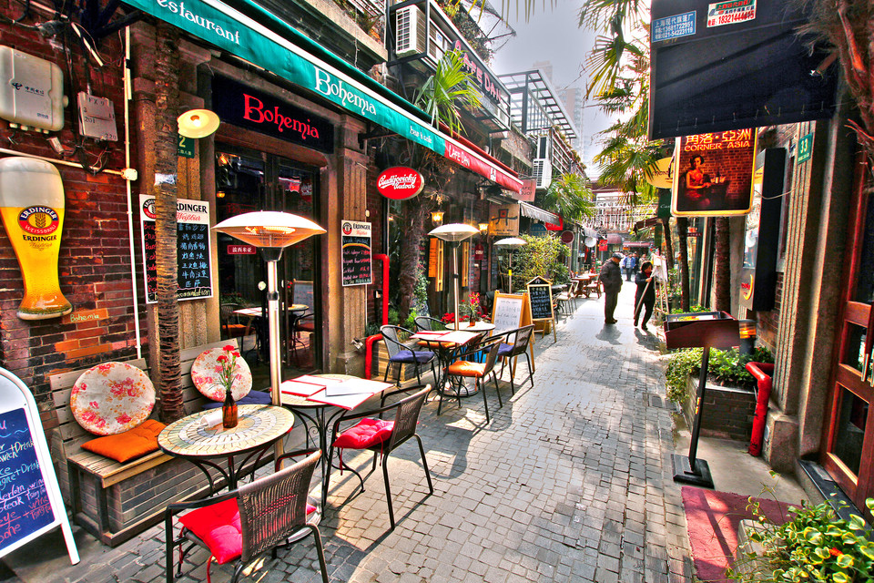
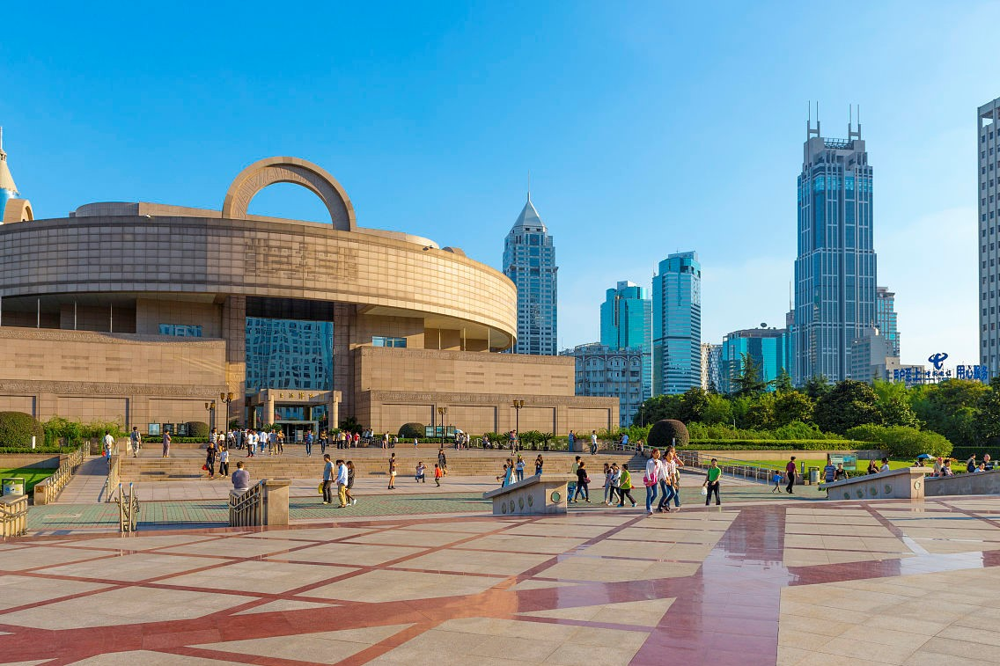
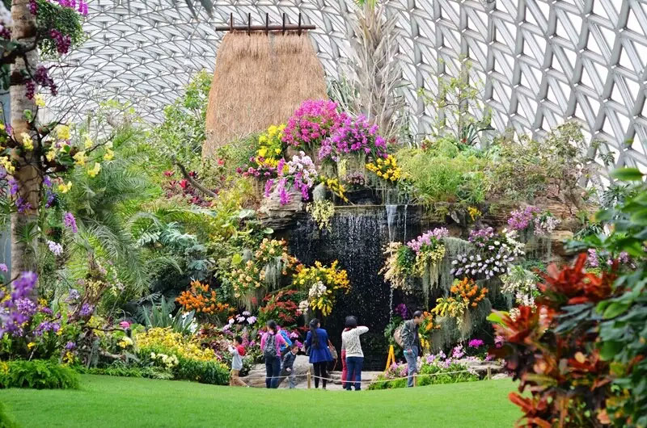
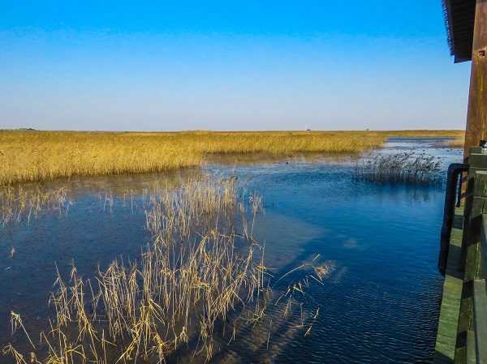
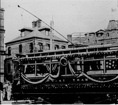

CHARACTERISTIC
what a fasinating city!
-
金融中心
上海是全球著名的金融中心，全球人口规模和面积最大的都会区之一。上海被GaWC评为世界一线城市。
-
艺术城市
上海是中国近代流行乐的发源地之一，上海音乐学院是当时亚洲顶尖的音乐学府，当时上海的流行乐曾一度风靡东南亚，部分歌曲被美国歌手英文翻唱后曾一度创下连续数月雄踞美国流行歌曲排行榜冠军的传奇。
-
魅力之都
上海拥有世界各国的饮食文化、经典时尚的购物激情和浓郁商业气息。
VIWPOINT
what a fasinating city!
-

外滩
自上海开埠后，外滩就开始成为上海乃至中国的金融及贸易中心，也是旧上海资本主义的写照，一直以来被视为上海的标志性建筑和城市历史的象征。与外滩隔江相对的浦东陆家嘴，有上海标志性建筑东方明珠、金茂大厦、上海中心、上海环球金融中心等，成为中国改革开放的象征和上海现代化建设的缩影。
-

迪士尼
上海迪士尼乐园，是中国内地首座迪士尼主题乐园，拥有七大主题园区：米奇大街、奇想花园、探险岛、宝藏湾、明日世界、梦幻世界、玩具总动员[1] ；两座主题酒店：上海迪士尼乐园酒店、玩具总动员酒店；一座地铁站：迪士尼站；并有许多全球首发游乐项目。
-

田子坊
田子坊是由上海特有的石库门建筑群改建后形成的时尚地标性创意产业聚集区，也是不少艺术家的创意工作基地，人们往往将田子坊称为“新天地第二”。
-

人民广场
上海人民广场位于上海黄浦区，是上海的政治、经济、文化、旅游中心和交通枢纽，也是上海最为重要的地标之一。成形于上海开埠以后，原来称上海跑马厅，是当时上层社会举行赛马等活动的场所。
-

辰山植物园
上海辰山植物园（Shanghai Chen Shan Botanical Garden）位于上海市松江区辰花公路3888号，于2011年1月23日对外开放，由上海市政府与中国科学院以及国家林业局、中国林业科学研究院合作共建，是一座集科研、科普和观赏游览于一体的AAAA级综合性植物园。
-

东滩湿地
崇明东滩位于长江入海口，处于我国候鸟南北迁徙的东线中部，地理位置十分重要。其生物多样性价值体现在物种的多样性和生态系统的多样性。东滩滩涂辽阔，拥有丰富的底栖动物和植被资源，是候鸟迁徙途中的集散地，也是水禽的越冬地。
HISTORY
ShangHai is a fasinating city.
-

- 近代上海
- 明代中叶(16世纪)，上海已成为全国棉纺织手工业中心。清康熙二十四年(公元1685年)，清政府在上海设立海关。19世纪中叶，上海已成为商贾云集的繁华港口。鸦片战争以后，上海被殖民主义者辟为“通商口岸”。
-
- 近代上海
- 明代中叶(16世纪)，上海已成为全国棉纺织手工业中心。清康熙二十四年(公元1685年)，清政府在上海设立海关。19世纪中叶，上海已成为商贾云集的繁华港口。鸦片战争以后，上海被殖民主义者辟为“通商口岸”。
-
- 近代上海
- 明代中叶(16世纪)，上海已成为全国棉纺织手工业中心。清康熙二十四年(公元1685年)，清政府在上海设立海关。19世纪中叶，上海已成为商贾云集的繁华港口。鸦片战争以后，上海被殖民主义者辟为“通商口岸”。